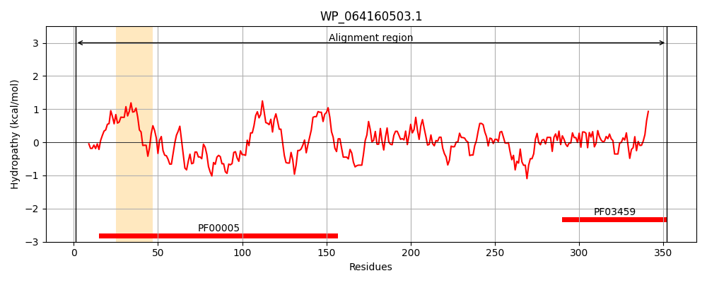
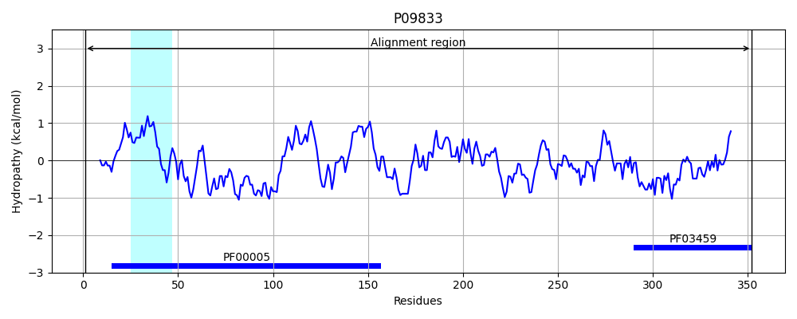
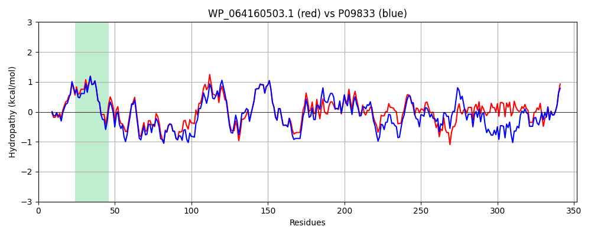

Hit Accession: P09833
Hit TCID: 3.A.1.8.1
Hit Description: gnl|BL_ORD_ID|8524 gnl|TC-DB|P09833|3.A.1.8.1 Molybdenum transport ATP-binding protein modC - Escherichia coli.
Mach Len: 352
e:0.000000
Query TMS Count : 1
Hit TMS Count: 1
TMS-Overlap Score: 1.150000
Predicted Substrates:CHEBI:6967;molybdate
BLAST Alignment:
Score: 1409 , Bit scores: 547 bits, E-value: 0.0e+00, Alignment length: 352, Percentage identity: 79
Query: 1 MLELDFTQTLGSHCLQIRETLPASGITAIFGVSGAGKTSLINAISGLTRPQTGRIVLNGRVLNDTAQRICLAPEQRRIGYVFQDARLFPHYKVRGNLRYGMAKCMVSQFDKLVELLGIAPLLDRLPGRLSGGEKQRVAIGRALLTAPELLLLDEPLASLDIPRKRELLPYLQRLAQEIHIPMLYVSHSLDEIQHLADRVLVLEAGKVKAFGPLEEVWSSSVMHPWLPAEQQSTILSATVAAQHPKYAMTALTLGDQLLWVNRLERPAGDTARIRIQASDVSLTLAQPSGTSIRNILRAEVAQCLEVNGQIEVQLRVSGRLLWARISPWARDDLAIAPGQQVFAQIKSVSIAA 352
MLEL+F+QTLG+HCL I ETLPA+GITAIFGVSGAGKTSLINAISGLTRPQ GRIVLNGRVLND + ICL PE+RR+GYVFQDARLFPHYKVRGNLRYGM+K MV QFDKLV LLGI PLLDRLPG LSGGEKQRVAIGRALLTAPELLLLDEPLASLDIPRKRELLPYLQRL +EI+IPMLYVSHSLDEI HLADRV+VLE G+VKAFG LEEVW SSVM+PWLP EQQS+IL TV HP YAMTAL LGDQ LWVN+L+ P RIRIQASDVSL L P TSIRN+LRA+V + NGQ+EV+L V G+ LWARISPWARD+LAI PG ++AQIKSVSI A
Sbjct: 1 MLELNFSQTLGNHCLTINETLPANGITAIFGVSGAGKTSLINAISGLTRPQKGRIVLNGRVLNDAEKGICLTPEKRRVGYVFQDARLFPHYKVRGNLRYGMSKSMVDQFDKLVALLGIEPLLDRLPGSLSGGEKQRVAIGRALLTAPELLLLDEPLASLDIPRKRELLPYLQRLTREINIPMLYVSHSLDEILHLADRVMVLENGQVKAFGALEEVWGSSVMNPWLPKEQQSSILKVTVLEHHPHYAMTALALGDQHLWVNKLDEPLQAALRIRIQASDVSLVLQPPQQTSIRNVLRAKVVNSYDDNGQVEVELEVGGKTLWARISPWARDELAIKPGLWLYAQIKSVSITA 352 | Protein Hydropathy Plots: |
|---|
|  |  |
Pairwise Alignment-Hydropathy Plot:
|
|---|
|  |